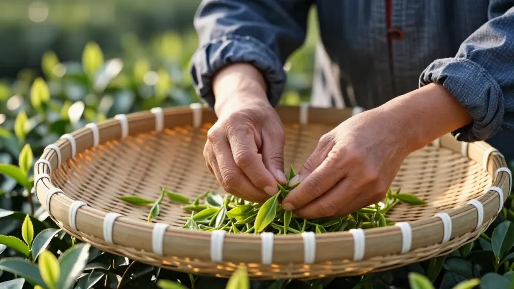

中秋刚过，街坊们忙着问秋茶；乌岽山上的老师傅却在晒青棚下，慢悠悠地翻着茶青，说："急什么，好茶从来不赶趟。"
📌 第一幕：街坊的着急
中秋节后第一天，阿凤姐的手机就炸了。
"阿凤姐，秋茶出了吗？"
"今年要不要提前订？我怕又像去年一样，好茶一上架就没了。"
"我想要蜜兰香，有好的帮我留两斤，送礼用！"
阿凤姐坐在沿江铺子里，面前摆着一壶早上刚泡的隔年蜜兰，边喝边回微信。她对屏幕那头的老客人说："急什么，秋茶才刚开始晒青，最快也要再等三五天。"
放下手机，她笑着摇摇头："每年都这样，中秋一过就来问秋茶。其实今年的气候偏凉，茶树生长慢，青子采得比往年迟了至少一个礼拜。"
她站起身，望向远处的山。"山上阿叔们常说，白露过后的茶，才真正有'秋味'。现在市场上卖的，很多是中秋前赶着做的'早秋茶'，香气是有了，但汤感还差点火候。"
话音刚落，铺子门口停下辆电动车。是住在惠州市区的老客人张叔，风风火火闯进来。
"阿凤姐！我听说今年秋茶要涨价，茶叶批发市场都在抢货，是不是真的？"
阿凤姐给他倒了杯水，让他坐下。"你先喝口水，我慢慢跟你说。"
📌 第二幕：批发市场变了
张叔是阿凤姐的老客人，每年中秋前都会来买一批茶送礼。但今年他在批发市场的经历，让他摸不着头脑。
"我在安溪茶叶批发市场问了一圈，档主们都说今年生意不好做。高价礼品茶根本卖不动，反而那种一两百块一斤的茶走得很快。"张叔回忆着。
阿凤姐点点头："这你算问到点子上了。今年整个茶叶市场都在变，中高端礼品茶的需求降了很多，反而日常口粮茶卖得火。"
她从柜台下面翻出一份行业报告，指着上面的数据说："你看，今年春茶季国内干毛茶批发价格指数同比下降约4.3%，安溪那边批发市场交易量降了近两成，交易额降了超过四分之一。但出口那边反而在涨，出口均价涨了8%多。"
张叔有些惊讶："那今年凤凰单丛呢？也跟着跌？"
阿凤姐摇摇头："我们这边情况不太一样。凤凰单丛的品质在那摆着，跌不到哪里去。但今年的价格区间确实在调整，以前那种动不动上千块一斤的'名山古树'，问的人少了；反而三四百到七八百块一斤的中端茶，需求很稳。"
她顿了顿，说："说到底，大家买茶更理性了。以前送个礼要面子，愿意为包装和稀缺概念多付钱。现在大家都明白，茶是自己喝的，口感好不好、值不值这个价，才是关键。"
📌 第三幕：林师傅的慢
张叔将信将疑，决定亲自上凤凰山看看。
车子沿着山路往上开，云雾越来越浓。来到乌岽村林伟周的茶厂时，这位74岁的省级非遗传承人正坐在晒青棚下面，慢悠悠地翻着茶青。
"林师傅，今年秋茶怎么样？"张叔问。
林伟周抬起头，笑了笑："慢慢来，不急。"
他指着面前的茶青说："你看这批青子，采下来才两天，现在正在晒青。阳光好的时候摊薄一点，阴天就收厚一点，全凭眼睛看、鼻子闻。机器烘干快，但少了这一步步的功夫，成品的'山韵'就出不来。"
林伟周是土生土长的乌岽人，制茶五十多年。"我爷爷那辈就这样做茶，我爸爸也是，到我这还是一样。"他说，"炭焙的时候更急不得，火候要稳，时间要够，一锅茶焙下来要十几个小时。快？快不得。"
张叔有些不好意思："可是市场上都在说今年秋茶要涨价，说茶叶少……"
林伟周摆摆手："每年都有人这样说。茶树又不是工厂流水线，今年雨水多了产量就少，明年风调雨顺产量就多，这是自然的道理。但茶好不好，不只看产量。"
他站起身，带着张叔看了看后院的茶树。"你看这棵老丛，水仙种，少说也有两百多年了。今年虽然产量不高，但茶青质量特别好，做出来的茶我自己都想留着自己喝。"
林伟周从茶房里拿出一泡今年刚做完的中低山秋茶，给张叔泡了一泡。茶汤入口，张叔沉默了。
"这茶……"他想了想，"比我在山下喝的那些三五百的，好喝太多了。"
"那是当然。"林伟周说，"这泡茶成本就摆在那里。山高，产量少，工艺正，炭焙到位。你拿来跟批发市场百来块的茶比，不公平。"
他重新坐下，翻着茶青，说："但也不是说便宜没好茶。我徒弟在凤凰镇脚下做的那批日常口粮茶，两百多块一斤，品质也稳。关键是找对渠道，别被人宰就行。"
📌 第四幕：年轻人来了
在下山的路上，张叔路过一家茶铺，门口站着几个年轻人，正在用手机直播。
主播是个二十出头的小伙子，对着镜头说："欢迎来到直播间，我是小杨，在凤凰山做茶。今天带大家看看我们家的秋茶，刚从晒青棚里收下来的……"
张叔停下脚步，看了一会儿。这家茶铺在线上卖茶，每天直播六个小时，靠着真实的生产场景吸引了不少粉丝。
他想起阿凤姐说的话——现在的茶叶电商变化很大，抖音、视频号这些平台卖茶增长很快，年轻人买茶不像老一辈非要实体店看货，线上看着合适就直接下单。
张叔加了小杨的微信，订了两百块一斤的蜜兰香日常装。"反正先试试，不好喝就不买。"他这样想。
回到市区，他给阿凤姐发了条信息："阿凤姐，今年我少订点礼品茶，多订点日常喝的，自己家喝。你帮我挑几款，两三百块一斤的就行。"
阿凤姐回复："好，你等两天，秋茶做好了给你发样品。"
张叔突然有点明白阿凤姐说的"理性"是什么意思了。
📌 🍵 蜜兰香小知识
蜜兰香，是凤凰单丛十大香型之一，属于浓香型乌龙茶。
- 产地：凤凰山海拔600米以上为主，高山茶韵味更足
- 特征：干茶有明显的蜜香和兰花香交织，冲泡后茶汤金黄透亮，入口先甜后回甘
- 做法：与传统凤凰单丛工艺一致，需经过晒青、晾青、浪青、炒青、揉捻、烘干、炭焙七道工序
- 储存：密封保存，避免潮湿和异味，冷藏可延长保鲜期
- 适合人群**：喜欢甘甜口感、刚开始喝单丛的茶友，性价比较高
📌 FAQ 常见问题
Q1：今年秋茶为什么比往年晚？
A：今年入秋后气温偏低，山区云雾多，茶树生长速度放缓，采摘时间比往年推迟了约一周。
Q2：秋茶和春茶哪个更好？
A：各有特色。春茶香气高、回甘强；秋茶汤感更醇厚、山韵更足。口感偏好因人而异。
Q3：凤凰单丛今年价格走势如何？
A：整体价格平稳，中高端礼品茶需求下降，300-800元/公斤的中端茶成为市场主流。
Q4：如何辨别炭焙茶和电焙茶？
A：炭焙茶有独特的炭火香，茶汤更柔和、回甘更持久；电焙茶香气较飘，存放后香气容易散失。
Q5：网购凤凰单丛靠谱吗？
A：选择有实体根基的商家，注意看产地标注（海拔、山村名称），避免过于低价的产品。
Q6：茶叶怎么保存最好？
A：拆封后密封保存，放置阴凉干燥处，避免阳光直射和串味。尽量在半年内饮用完以保证口感。
📍 阿凤姐茶叶店
广东省惠州市惠城区东湖花园一区沿江商铺89-136
惠州凤凰茶业 | 潮州凤凰单丛·源头直供
📞 电话/微信：13435567385
📱
⏰ 营业时间：每天 9:00 - 21:00，全年无休
🏷️ Tags：#凤凰单丛 #秋茶上市 #乌岽山 #炭焙工艺 #蜜兰香 #茶叶市场 #广东茶 #口粮茶 #林伟周 #潮州工夫茶
📌 下回预告：秋茶陆续上市，泡茶水温到底多少度才对？林师傅说"看茶泡茶"，阿凤姐说"看人泡茶"，哪个才对？下回分解。